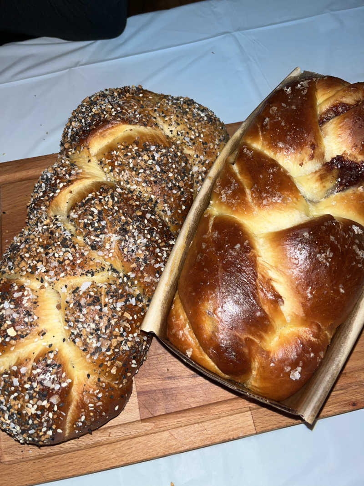

This is my mother's challah bread recipe. Challah is a Jewish celebratory bread, traditionally served at Shabbat meals.
I committed myself to learning it when I was stuck at home during the COVID-19 quarantine. Now, I make it once a week on Fridays to celebrate the weekly Sabbath with my friends.
Though typically served as part of this weekly holiday, Challah is delicious any day, any time. It is slightly sweet, perfectly fluffy, and perfect for sandwhiches, toast, or simply on it's own.
This is the basic dough recipe, but you can also stuff the dough with different fillings and top it with seasonings to try new flavors. Some stuffing examples are pesto, truffle, cheese, peanut butter and jelly, and even nutella. Top your challah with sesame seeds, Everything But the Bagel seasoning, Za'atar, or even just some flaky sea salt for the perfect salty-sweet bites.
Note: This recipe takes several hours for rising time. Start making your dough in the morning to be able to serve it the same night. You can also bake ahead and store in the freezer, simply reheating in the oven when you are ready to enjoy.
Again, If you are not ready to enjoy your challahs immediately, store them in the freezer (after cooling) and heat them up in the oven to defrost and enjoy another day! They'll keep in the freezer for about 3 months.